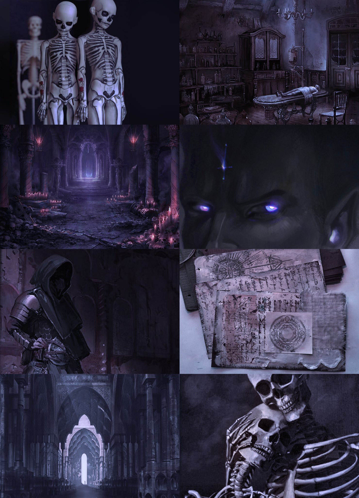
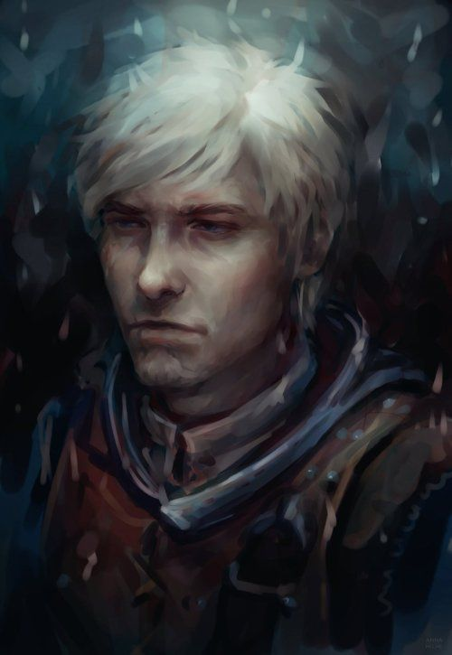
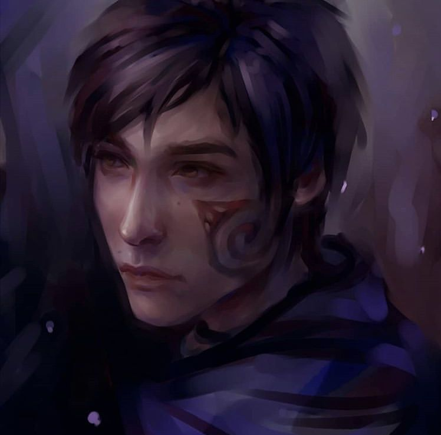
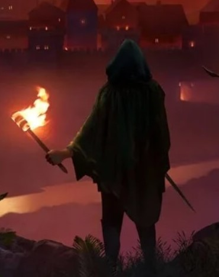

Что из себя представляет игра
Enderal — это полная конверсия TES V: Skyrim: игровая модификация, действие которой происходит в собственном мире со своим ландшафтом, лором и историей. Он предлагает захватывающий открытый мир, который игрок может исследовать, переработанную систему навыков и игровую механику, а также мрачную психологическую сюжетную линию с правдоподобными персонажами. Enderal бесплатна, и в нее может играть любой, у кого есть легальная копия TES V: Skyrim (никаких DLC не требуется). Он разработан на некоммерческой основе SureAI — командой, стоящей за известным модом Oblivion «Nehrim: At Fate´s Edge» и другими проектами.
Особенности
- Открытый мир со своими собственными знаниями и вручную созданными, детализированными и разнообразными ландшафтами (пустыня, вересковая пустошь, леса, джунгли, горы и многое другое); 
- Необычная история с психологическим и философским подтекстом;
- Немецкая и английская локализации, обе полностью озвучены десятками дикторов, многие из которых имеют профессиональный опыт;
- Многогранные, правдоподобные персонажи со своими амбициями и мотивами;
- Переработанный игровой процесс с очками опыта, механикой выживания и сложными боями;
- Переработанная система навыков с классами и новыми особыми способностями;
- Жилищная система, позволяющая игроку обустраивать собственные дома;
- От 30 до 100 часов игрового времени.
Сюжет
Главный герой представлен как беженец, пытающийся сбежать в Эндерал на торговом судне. Ближе к концу путешествия перед ним появляется призрачная женщина в вуали, в результате чего его спутник погибает, а игрок оказывается выброшенным за борт.
Игрок просыпается на побережье, обнаруживает, что теперь обладает магическими способностями, и
отправляется в Арк, столицу Эндерала, чтобы научиться контролировать эти новые способности.

По прибытии в Арк выясняется, что «Красное безумие» предвещает приближение Очищения, заключительной стадии в цикле апокалиптических разрушений и возрождений, который происходил на протяжении тысячелетий, каждый раз приводя к полному исчезновению доминирующей цивилизации на Вин.
Главные персонажи

Джеспар Митумиэль Даль'Варек
— наемник, первоначально нанятый Константином Огневспыхом, чтобы узнать о жизни Магистра Йеро. Важный сюжетный персонаж и один из двух NPC, доступных для романа (второй - Калия Закареш). Джеспар спасает героя после нападения бандитов на лагерь апотекариев Финна и Карбоса. Также он определяет, что герой страдает от чародейской лихорадки и рассказывает насколько она опасна. Джеспар предлагает отвести героя к его работодателю — Святому ордену, в обмен на помощь в выполнении его текущего задания. Святой орден постоянно нанимает Джеспара, и он сопровождает героя в некоторых квестах. В бою Джеспар использует два железных кинжала. Обычно Джепара можно найти в таверне "Танцующий кочевник", в квартале чужеземцев.
Калия Закареш
(настоящее имя Майя Даль'Галар) — хранительница Ордена, прошедшая ритуал посвящения вместе с главным героем. Важный сюжетный персонаж и один из двоих NPC, доступных для романа (второй - Джеспар Даль'Варек). Калия отправляется путешествовать вместе с героем по ходу некоторых заданий. Она носит тяжелую броню, в качестве оружия использует двуручный меч, а также владеет магией света. Является носителем Черного камня.